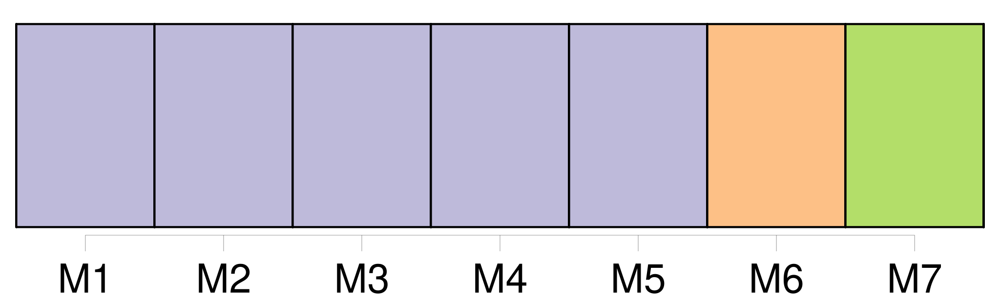
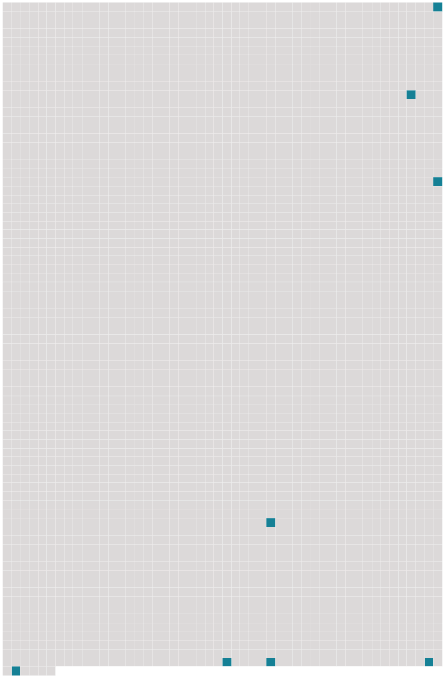

Longueur nb maillons : 8 mentions |
 |
M. L. Perey a raconté déjà comment les Pictet de St-Jean voisinaient familièrement avec l'illustre philosophe, et les papiers de Rosalie et de sa famille, ont fourni à l'aimable biographe beaucoup de détails sur ce qui se passait aux Délices, et à [Ferney] [15 phrases] Bien souvent après son mariage, elle remonta sur les planches édifiées à [Ferney] et prit un rôle dans l'une ou l'autre des pièces composées par l'ami de ses parents. [24 phrases] De là en carrosse vert à [Ferney] [80 phrases] En effet, Mme Pictet emmenait parfois ses petits-enfants quand elle s'en allait à [Ferney] [35 phrases] Il parle de vendre [Ferney] , ensuite de ne [le] pas vendre, enfin j'attends ses volontés …… J'ai grande envie, si je reste [ici] , d' [y] vivre en philosophe. |
 |
Il est possible de télécharger la ressource sur la page Ortolang |
Si vous avez des questions ou vous voyez des erreurs, merci d'envoyer un mail à silvia.federzoni89@gmail.com |